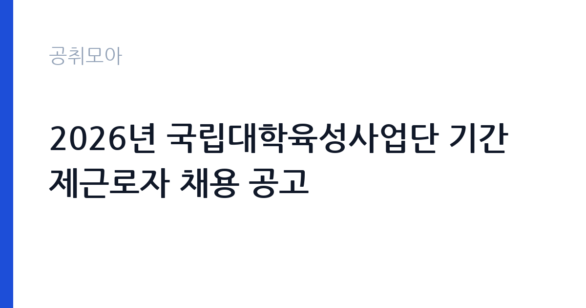

[국가기관] 2026년 국립대학육성사업단 기간제근로자 채용 공고
국립창원대학교 · 경남 · 마감 2026-11-09 (D-14) · 출처 나라일터

한눈에 보는 모집 조건
| 기관 | 국립창원대학교 |
|---|---|
| 공고명 | 2026년 국립대학육성사업단 기간제근로자 채용 공고 |
| 고용형태 | 기간제 |
| 근무지 | 경남 |
| 게시일 | 2026-10-26 |
| 마감일 | 2026-11-09 (D-14) |
지원자격, 이렇게 읽으세요
- 연구원 1명 사무원 1명
- 접수 ~2026-11-09 마감
- 세부 조건은 원문 공고문 확인
기간제 근로자는 근로계약 기간이 정해진 신분입니다. 계약 기간과 갱신 가능 여부가 근로계약서에 명시되며 기간 만료 시 근로관계가 종료됩니다. 결원 보충이나 특정 사업 기간에 맞춰 채용되는 경우가 많아 업무 범위가 명확합니다. 이번 공고는 국립창원대학교에서 직접 진행하는 자체 전형으로, 응시자격과 제출서류는 공고문에 항목별로 제시됩니다. 국책사업 전담 인력은 관련 사업 운영 경력과 행정 실무 능력을 함께 봅니다. 계약직이나 기간제로 채용되는 경우가 많아 사업 기간과 재계약 조건을 먼저 확인해야 합니다. 예산 집행과 정산 경험, 보고서 작성 능력이 실질적인 평가 기준입니다. 사업 분야에 대한 이해도 요구되므로 지원 전에 사업 개요와 연차별 목표를 읽어 두어야 합니다. 서류는 접수 마감 이후 보완이 되지 않으므로 자격 요건과 증빙 서류를 마감 전에 모두 갖춰야 합니다. 공고문에 명시된 우대 사항은 해당 여부를 확인해 증빙을 첨부해야 가점이 반영됩니다. 학력이나 전공 요건이 없는 공고라도 제출서류 목록은 그대로 적용되므로 서류 준비 부담은 줄지 않습니다.
이 공고의 포인트
이 공고의 첫 번째 포인트는 고용 형태입니다. 계약 기간이 정해져 있어 근무 종료 시점이 명확합니다. 그만큼 짧은 기간에 어떤 실적을 남길지가 중요해집니다. 두 번째는 업무 범위가 명확하다는 점입니다. 국책사업 전담 직무로 채용되므로 배치 이후 담당 업무가 크게 흔들리지 않습니다. 세 번째는 근무지입니다. 경남 지역 근무로 수도권 공고에 비해 지원자 분포가 넓지 않아 상대적으로 경쟁이 분산되는 경우가 있습니다. 재공고로 올라온 공고라 이전 차수 지원자와의 형평성 기준을 확인할 필요가 있습니다. 같은 직무로 함께 올라온 공고 4건 가운데 마감이 중간에 위치하므로 다른 공고와 일정이 겹치는지 확인하십시오. 다만 선발 인원이 1명으로 많지 않아 자격을 갖춘 지원자가 몰리면 경쟁률이 높아질 수 있습니다.
전형은 어떻게 진행되나
채용 절차는 공고문에 안내된 순서대로 진행되며, 서류 접수 마감 후에는 추가 접수나 서류 보완이 이뤄지지 않는 것이 원칙입니다. 서류심사에서는 응시자격과 제출서류의 형식 요건을 기계적으로 확인하므로, 경력 증명서의 기간과 직무 내용이 공고의 요건과 정확히 맞아야 합니다. 면접은 지원자 수에 따라 집단면접과 개별면접으로 나뉘고, 직무 관련 질문과 상황 대응 질문이 함께 나옵니다. 합격자 발표는 개별 통보 또는 홈페이지 게시로 이뤄지며 이후 임용 절차가 진행됩니다. 동점자 처리 기준이 공고문에 명시되어 있으니 배점 항목을 미리 확인해 두십시오.
이런 분께 추천해요
- 국책사업 운영이나 정산 실무 경험이 있는 분
- 유관 기관과 협의를 이끌어본 경험이 있는 분
- 사업 기간 내 성과 목표를 관리할 수 있는 분
지원 전 체크리스트
- 응시자격 요건과 경력 기준을 충족하는가 — 경력은 증명서로 입증해야 합니다
- 계약 기간과 근무 시작일·종료일을 확인했는가
- 제출서류 목록을 모두 준비했는가 — 누락 시 서류 단계에서 탈락합니다
- 접수 마감 2026-11-09 이전에 접수 방식을 확인해 제출했는가
모집 일정과 제출 타이밍
공고 게시일은 2026-10-26, 접수 마감은 2026-11-09입니다. 준비 기간은 약 14일로 서류 준비와 자격 증빙을 함께 처리하기에는 넉넉하지 않은 편입니다. 첫 이틀 안에 공고문과 첨부 서식을 내려받아 요건을 확인하고 남은 기간에 증빙 서류를 발급받는 일정이 현실적입니다. 면접은 서류 합격자 발표 후 짧은 간격으로 진행되는 경우가 많으므로 서류 제출과 동시에 면접 준비를 시작하는 편이 안전합니다. 마감일에는 접수 시스템이 몰리므로 하루 전까지 제출을 마치는 것이 좋습니다. 제출 서류는 공고문에 적힌 순서대로 정리하면 담당자가 확인하기 쉬워 누락이 줄어듭니다. 경남 근무지는 산업·항만 시설 인근이 많아 근무 환경을 미리 파악하는 것이 좋습니다. 마감까지 2주 안팎이 있어 준비할 시간은 있지만 미루면 촉박해집니다. 선발 인원이 한두 명 수준이라 지원자 개개인의 서류 완성도가 그대로 평가에 반영됩니다.
직무 이해하기: 국가기관
교육기관은 학교 교육과 교원 연수, 교육 행정을 담당합니다. 교육청은 관내 학교를 지원하고, 대학은 학사와 연구, 학생 지원 업무를 운영합니다. 예산과 인사 규정이 교육부 지침과 자체 규정을 함께 따르므로 절차가 엄격합니다. 국책사업 전담 인력은 정부 지원 사업의 계획 수립과 집행, 성과 관리를 맡습니다. 사업 참여 기관과 기업을 발굴해 협약을 체결하고, 참여자 모집과 교육 과정 운영을 조정합니다. 사업비 집행과 정산, 실적 증빙 관리가 업무의 큰 부분을 차지하고, 정부 부처와 지자체에 보고 자료를 제출합니다. 사업 기간이 정해져 있어 연차별 목표를 달성해야 하고, 중간 평가와 최종 평가를 준비해야 합니다. 대학이나 공공기관의 사업단에 배치되어 기존 행정 조직과 협업하는 구조가 일반적입니다. 업무는 혼자 처리하기보다 부서 단위로 나눠 진행되므로 담당 구역과 협업 범위를 입사 초에 확인하는 것이 중요합니다. 업무 강도와 근무 시간대는 부서 배치에 따라 달라지므로 면접에서 확인하는 것이 가장 정확합니다.
자기소개서 작성 팁
지원서는 사업 단위 성과로 구성하십시오. 맡았던 사업의 규모, 참여 인원, 달성률, 집행 예산을 수치로 제시하면 신뢰가 생깁니다. 정산과 감사 대응 경험은 이 직무에서 특히 강한 소재입니다. 지원 사업의 연차별 목표를 읽고 본인이 맡을 수 있는 부분을 구체적으로 제안하면 준비도가 드러납니다. 문항별 글자 수 제한을 먼저 확인하고, 각 문항의 첫 문장에 결론을 배치하는 방식이 읽기 쉽습니다. 지원 동기는 기관의 어떤 사업에 기여하겠다는 한 문장으로 시작하고, 이어서 본인의 경험을 근거로 붙이십시오. 감점을 피하려면 다른 기관에 보낼 수 있는 범용 문장을 그대로 쓰지 않는 것이 중요합니다. 기관 이름과 사업명이 문장 안에 자연스럽게 들어가야 준비도가 드러납니다.
면접 준비 포인트
면접에서는 사업 운영 실무를 얼마나 아는지 확인합니다. 참여자 모집이 목표에 미달할 때 어떤 대안을 쓸지, 사업비 집행 증빙이 맞지 않을 때 어떻게 처리하는지 묻습니다. 유관 기관과 협의를 이끌어낸 경험도 자주 질문합니다. 사업 기간이 한정되어 있으므로 기간 내 성과 목표를 어떻게 세울지 답하십시오. 답변은 상황, 판단, 조치의 순서로 정리하면 전달이 분명해집니다. 모르는 질문에는 모른다고 밝히고 확인 방법을 제시하는 편이 억지 답변보다 낫습니다. 마지막에는 근무 의사와 함께 2026-11-09 이후 일정에 언제든 응할 수 있다는 점을 전달하십시오. 지원 기관의 최근 사업이나 조직 개편 내용을 확인해 두면 지원 동기 질문에서 차이가 납니다.
급여·근무조건 읽는 법
국립창원대학교의 구체적인 보수 수치는 이 공고 원문의 처우 항목과 보수표에서 확인해야 합니다. 공시 자료로 확인되지 않은 금액은 이 글에서 추정해 제시하지 않습니다. 국책사업 전담 인력은 대부분 계약직으로 채용되어 사업 인건비 기준과 기관 임금 규정을 함께 적용받습니다. 연봉 총액과 계약 기간이 계약서에 명시되므로 월 급여보다 총 보상으로 비교해야 합니다. 성과급과 수당 포함 여부를 확인하십시오. 2026년 적용 최저임금은 시급 10,320원, 월 환산 2,156,880원(주 40시간·209시간 기준)입니다. 고용노동부 고시 제2025-47호로 확정된 금액입니다. 공고문에 금액이 제시되지 않은 항목은 원문 보수표나 처우 설명에서 확인해야 하며 확인되지 않은 수치는 쓰지 않는 것이 원칙입니다. 비교할 때는 월 급여뿐 아니라 상여·명절휴가비·복지포인트·초과근무수당까지 포함한 연간 총액으로 계산하십시오. 기간제라면 계약 기간 동안의 총액을, 무기계약이라면 호봉 상승과 정년까지의 누적 소득을 기준으로 판단하는 편이 정확합니다.
자주 묻는 질문
- 선발 인원은 몇 명인가요?
공고문 기준 1명입니다. 직종별로 인원이 나뉘는 경우가 있으니 모집분야 항목을 함께 확인하십시오. - 근무지는 어디인가요?
경남 지역의 국립창원대학교 소속 근무지입니다. 세부 주소와 출퇴근 조건은 원문 공고문에서 확인할 수 있습니다. - 보수는 얼마인가요?
채용 신분(기간제)과 기관 임금 규정에 따라 정해지며 구체적인 금액은 공고문 처우 항목에 제시됩니다. 금액이 공개되지 않은 경우에는 원문의 보수표를 확인하십시오.
함께 보면 좋은 공고
[국가기관] 제2026-1회 국립한국교통대학교 지역성장 인재양성체계(앵커) 초광역 성장엔진 인재육성사업 전담인력 신규채용 공고 — 마감 2026-11-03[국가기관] 2026년 제8회 서천우체국 기간제 상시계약집배원(농어촌) 채용 계획서 — 마감 2026-11-03[국가기관] 전북대학교 기획처 연구원(기간제 계약직원) 채용 공고 — 마감 2026-11-04출처: 나라일터 공개정보를 바탕으로 공취모아가 정리한 안내글입니다. 모집 조건·일정은 변경될 수 있으니 지원 전 반드시 원문 공고문을 확인하세요. 본 글은 정보 제공용이며 합격을 보장하지 않습니다.